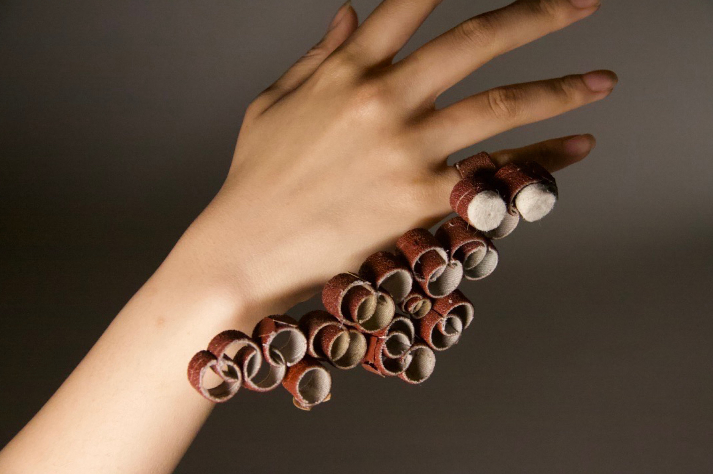
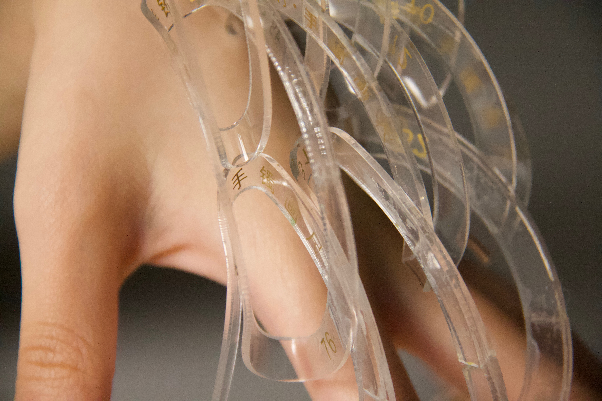

红线交织的 “灵魂之声” | 孙思奕「艺术访谈」
欢迎来到木牙Make Unique Young Arts，让我们一起来深入了解象征着复杂的思想背后的产物-首饰吧！
思想、自我意志、情感、当下的心态、真我等代表着个人内在的思考。以及随着时间和与社会接触后出现的三观都促使着人类有意识或无意识的开始传递自己内在的想法。
在早期，当人类学会了解自我和表达复杂的象征性思想后相继伴随而出的是珠宝。就如同自然界的动物身上艳丽的羽毛和具有特色的麟角等，人类也开始了美化他们的进程。这是珠宝首饰被赋予的含义的开始。
当代的发展，我们开始追求新的路程，首饰也开始了他的变革，从注重舒适的佩戴，昂贵的材质，绚丽的色彩到传达的思想，展现的自我。今天我们邀请了孙思奕来到木牙MUYA和我们聊聊她对于当代首饰的理解和学习心得。
Thoughts, self-will, emotions, mind, and truth represent the inner thoughts of the individual. As well as the three views that emerge over time and in contact with society, all cause humans, consciously or unconsciously, to begin express their inner thoughts.
In the early days, when humans learned to understand themselves and express complex symbolic ideas, such as jewelry. Just as animals in nature have gorgeous feathers and rare features, humans have begun the process of beautifying them. This was the beginning of the meaning of jewelry.
In the contemporary, we began to pursue a new path, jewelry also began to change, from pay attention on comfortable wearing, fashion material, gorgeous color to convey the idea, show the self. We have invited Siyi Sun to MUYA for sharing her understanding and learning of contemporary jewelry.
孙思奕，首饰设计师，来自中国青岛，超爱大海。信仰自由，她觉得可以献给艺术，但是首先还是要理性地活着。她于2019年入读了纽约州的罗切斯特理工学院（Rochester Institute of Technology），并在此学习金属与首饰设计，从此开始了其新的艺术之旅。在这里学习期间，她以优异的成绩一直在罗切斯特理工学院的荣誉院长名单中。
她于2021年起任美国道德伦理金工协会（EthicalMetalsmiths）学生会员至今。此外，她的作品荣幸地入选北美金工匠协会(Society of North American Goldsmiths SNAG)举办的2021年学生展览。
作为一名首饰设计师，她对首饰的热情集中在反映佩戴者的性格并体现“灵魂之声”的能力上。她以描绘自己感悟到的人类的内心世界为她的代表性风格——她向来都是遵从并贴近自己内心的想法来用首饰语言描绘精神。在其作品中，她经常用各种由饱满和空洞的物质构成的材料来解释人类的性格和思想，因为在她看来，空虚和饱满是人类情感的两个主要方面。
Siyi Sun, was born in 2000 in Qingdao, China. She pursues Metals & Jewelry Design at the Rochester Institute of Technology(RIT). During the time she studies here, she has been awarded on the Dean's List.
She has been a student member of the Ethical Metalsmiths since 2021. Her work Eternal were honored to be included in the Society of North American Goldsmiths's Student Exhibition of 2021. In addition, her works were also honored to be selected into the " “Transform Unique Latitude”, BE THE ONE Open Call of MUYA Arts at the end of 2020.
Her enthusiasm in jewelry focuses on the ability to connect the inner self and the outside physical world. With a strong passion for the cubist art movement, she explores a diverse approach to sculptural form. She always experiments to interpret humans’ spirits with various materials made of full and empty matter, since she believes emptiness and fullness are the major aspects of human emotion.

生活是一张画纸，我们每个人都是艺术创作者，我们时时刻刻都在进行着艺术创作。我生活在别人的艺术过程之中，别人亦生活在我的艺术过程之中。
Life is a piece of painting paper, each of us is the artist. We are always in the artistic creation. I live in the artistic process of others, and they also live in my artistic process.

➤ 木牙MUYA: 思奕是如何看待自己以及观众对自己作品解读的权力，如果观众的解读背离了自己制作的初衷的时候作品的意义应该基于自我还是观众？
How does Siyi view the interpterion of yourself and the audience to your work? If the audience's interpretation deviates from the original intention of production, should the meaning of the work be based on yourself or the audience?
Siyi: 正如莎士比亚所言,"一千个观众眼中有一千个哈姆雷特。" 仁者见仁,智者见智。由于人们的经历都千差万别，这也导致每一位观众都可能会对作品产生不同的感受。我倒乐得听闻观众对于我作品的不同解读。在我看来，不存在什么“解读背离初衷”，毕竟凡事都要从两面去讨论嘛。我反而觉得正是这种多元化的分析，才导致了我的作品获得精神上的丰富、升华和圆满。最后，我作品的意义基于自我，也基于观众。
As Shakespeare said," There are thousand Hamlets in a thousand people's eyes." Different people have different views on the same thing. Because people's experiences are so different, each viewer may have different feelings towards the work. I enjoy hearing different interpretations of my work from the audience. In my opinion, there is no such thing as "reading against the original", after all, everything has to be discussed on both sides. On the contrary, I think it is this kind of diversified analysis that leads to the spiritual enrichment, sublimation and perfection of my works. Finally, the meaning of my work is based on the self as well as the audience.

➤ 木牙MUYA: 珠宝一直与身体有着密不可分的关系，思奕是如何理解当代珠宝与现在流行的快消品珠宝之间的差别？可以详细的和我们讲讲你是如何区分他们的吗？
Jewelry has always been closely related to the body. How does Siyi understand the difference between contemporary jewelry and FMCG jewelry? Can you tell us more about how you difference them?
Siyi: 我想概括一下：
快消品珠宝：装饰意义大于实际意义。
当代珠宝：思想维度构建装饰意义。
快消品首饰通常来说使用寿命较短，内在价值较低。这种首饰其实更加着重包装、品牌化以及大众化。这不是负面地评价快消品珠宝哦。快消品珠宝装饰的多样性极高地满足了五花八门的市场需要，也正是由于这些特质使得市场受众面的广泛化。而当代首饰勇于创新，勇于碰撞时代的激流，尽管如此，它们所传达出来的意义和价值与快消品首饰相比，还是始终小众化的。通常来说当代首饰都是创作者的思维深度丰富了作品的外貌和内涵。当代首饰的价值是长久的，但是它们不够“方便使用”和“深入人心”。当代首饰就像老酒佳酿，日子久了，才更是回味甘醇啊。
I want to summarize:
FMCG Jewelry: Decorative significance is greater than practical significance.
Contemporary Jewelry: Constructing Decorative Meaning from Ideological Dimension.
In General, FMCG jewelry has a short service life and low intrinsic value. This kind of jewelry is more about packaging, branding and popularization. This is not a negative comment on FMCG jewelry. The diversity of FMCG jewelry decoration meets the needs of various markets at a high level, and it is precisely because of these characteristics that the market has become widely popular. However, contemporary jewelry is brave in innovation and collision with the torrential current of the era. Nevertheless, the meaning and value conveyed by them are always small compared with FMCG jewelry. Generally, the depth of thinking of the creator enriches the appearance and connotation of the works of contemporary jewelry. The value of contemporary jewelry is long-lasting, but it is not "easy to use" or "deeply rooted". Contemporary jewelry is like old wine, with a long time, it is more pleasant aftertaste.

➤ 木牙MUYA: 珠宝是人类身体的延伸，也是对内在精神的延伸。在最早期随着人类学会了解自我和表达复杂的象征思想之后并且开始使用物品（珠宝）作为象征而不再单独生存。这样的解释是否意味着珠宝寄托着佩戴者的意志？
Jewelry is an extension of the human body, but also an extension of the inner spirit. In the earliest stages as humans learned to understand themselves and express complex symbolic ideas and began to use objects (jewelry) as symbols instead of living alone. Does such an interpretation mean that jewelry rests on the will of the wearer?
Siyi: 当然，珠宝的确寄托着佩戴者的意志。而且不仅意志，还有情感、当下的心态、思想、甚至真我。在人们开始使用珠宝首饰表达自我以后，首饰也就成为了一种个人的LOGO，它标志着独立而又独特的个体。我一直认为，首饰其实是一种人文的语言和载体。并且首饰这种媒介的寄托和象征意义能够真实地传达出人们对于自我、生活以及未来的追求。
Jewelry does, of course, depend on the wearer's will. And not just the will, but also the emotions, the present state of mind, the mind, even the true self. After people began to use jewelry to express themselves, jewelry has become a personal LOGO, which symbolizes an independent and unique individual. I always think that jewelry is a kind of humanistic language and carrier. Moreover, the sustenance and symbolic meaning of jewelry as a medium can truly convey people's pursuit for themselves, life and future.
➤ 木牙MUYA: 如果说珠宝不是必需品意义上更是奢侈品，那珠宝存在的意义是什么？思奕是如何理解的？
If jewelry is more of a luxury than a necessity, what is the purpose of its existence? How does Siyi understand it?
Siyi: 的确，首饰可以是奢侈品，也可以是必需品。但是我更倾向于它是一种品质生活的必需品。我认为，拥有首饰无关乎你的财富能力，只关乎你自己——拥有首饰不仅是对自己品位的肯定，也是对自己生活的追求。这种需求是精致的、纯粹的、真诚的。首饰是最贴切人们自我的装饰之一，和服装一样。佩戴者的选择可以体现出他们的个人兴趣、品味等。我来看首饰的话，我认为它就像镜子，反映出内心世界的镜子。隐秘而伟大，含蓄又张扬。
Indeed, jewelry can be a luxury or a necessity. But I prefer it to be a necessity of quality life. In my opinion, owning jewelry is not about your wealth ability, but about yourself -- owning jewelry is not only an affirmation of your own taste, but also the pursuit of your life. The need is exquisite, pure, and genuine. Jewelry is one of the most personal accessories, as well as clothing. The choice of the wearer can reflect their personal interests, tastes, etc. When I look at jewelry, I think it's like a mirror, a mirror of the inner world. Secretive and great, implicit and publicity.
➤ 木牙MUYA: 在思奕的很多设计与工作经历中， 您认为珠宝设计师在设计行业和市场扮演着怎样的⻆色，或者发展的前景是怎样的呢？
Based on many design and work experiences of Siyi, what role do you think jewelry designers play in the design industry and market, or what is the development prospect?
Siyi: 我从事的设计工作多数是与电脑相关。因为现在的时代是一个离不开计算机的时代，即使是首饰设计，也有诸多工作需要在电脑上完成。因此我通过这些经历不断地积累自己的CAD（Computer Aided Design）技巧，以便自己日后在这个领域更成熟地发展。我虽不敢妄自菲薄去讨论首饰设计师未来发展的前景，但是我忐忑而又期盼首饰设计师们能够有越来越多的机会去展现自己的声音，而不是被生活逐渐埋没风采。
Most of my design work has to do with computers. Because the current era is inseparable from computers, even jewelry design, there are a lot of work need to be completed on the computer. Therefore, I continue to accumulate my CAD (Computer Aided Design) skills through these experiences, so that I can develop more mature in this field in the future. Although I dare not belittle myself to discuss the future development prospects of jewelry designers, I am anxious and hope that jewelry designers can have more and more opportunities to show their own voice, rather than being gradually buried by life.

➤ 木牙MUYA: 珠宝设计师对于材料有着很独特的敏锐性，但当下社会对于材料常以价值来定位，从而珠宝也自然随着材料的价值而衡量高低，那么设计的价值又在哪里呢？设计的价值又是如何估量的呢？
Jewelry designers have a unique sensitivity to materials, but the current often values materials, so jewelry is naturally measured according to the value of materials, so where is the value of design? What is the value of design?
Siyi: 是的，传统意义上珠宝随着材料的价值而被衡量高低，但是在我看来，这种观点是要打破的。虽然它也一定有存在的道理，但是我考虑到当代首饰本就应该打开甚至打破固有的枷锁。我们人类哭着降临世界，因为信仰和追求，可以笑着走向永恒。所有的材料和物质都像人一样，经历了加工和制造，被生产出来并发挥它自己的作用。但是我相信，由于艺术的淬炼，不管是什么价值的材料都可以得到生命的升华。这种升华是可以取代材料本身价值的。这又让我想到当今的热门话题，环境保护、绿色首饰。用废弃物品创造的产品创意和意义可能比贵金属还要深刻很多很多。比如我创作的Eternal和Value这两系列作品。Eternal是由生活中的废弃物品与金属宝石结合创作的首饰；Value是完全由加工首饰的工具制造而成。我反而觉得这样的材料使得作品的价值远超出原本的材料价值。
Yes, jewelry has traditionally been measured according to the value of the material, but in my opinion, this view is to be broken. Although it certainly has a reason to exist, but I consider that contemporary jewelry should be opened or even break the shackles of the inherent. We human beings come to the world crying, because of faith and pursuit, can smile towards eternity. All materials and substances, like people, have undergone processing and manufacturing, and are produced and play their own role. However, I believe that due to the refinement of art, materials of whatever value can be sublimated to life. This sublimation can replace the value of the material itself. This brings me to the current hot topics, environmental protection, green jewelry. The product ideas and meanings created from waste materials can be much, much more profound than precious metals. For example, I created two series of works Eternal and Value. Eternal is a piece of jewelry created by combining discarded objects in life with metallic gems; Value is made entirely from the tools used to process jewelry. On the contrary, I think this material makes the value of the work far beyond the original value of the material.
➤ 木牙MUYA: 多重文化艺术教育背景下，思奕在艺术观念上有怎样的转变呢？这样的经历，带给您最大的成⻓和变化又是怎样的？
Under the background of multi-cultural art education, what is the change of Siyi's artistic concept? What is the greatest growth and change that this experience has brought you?
Siyi: 多重文化艺术教育背景，使得我学会站在不同的文化角度去品读、审视并反思自我。我有感觉到自己就像新生的芽，在汲取着来自不同国家的多元化的营养。我在感知和吸收，也在融合和过滤，还在准备绽放。这种宽广的教育平台让我看到了艺术圈这片沃土上有万木争荣、群芳吐绿。我更加意识到谦逊着竞争的意义。我觉得自己最明显的成⻓和变化是思维模式。我越来越注意以宏观的眼光去看待自己的创作，从而避免局限和狭隘。
The multi-cultural art education background makes me learn to read, examine and reflect on myself from different cultural perspectives. I feel that I am just like a new bud, absorbing diversified nutrition from different countries. I am perceiving and absorbing, I am also merging and filtering, I am still ready to blossom. Such a broad educational platform allows me to see that there are all kinds of trees competing for glory and flourishing on this fertile soil of the art circle. I became more aware of the significance of humility and competition. I think the most obvious growth and change in myself is in my mindset. I pay more and more attention to look at my creation from a macro perspective, to avoid limitations and narrowness.

➤ 木牙MUYA: 思奕有哪些艺术相关的书籍，或者启发很深的书籍可以分享给我们的吗？
Does Siyi have any art related books or deeply inspiring books that you can share with us?
Siyi: 比起书籍，此时的我更想推荐一部电影，叫做《达摩为何东渡》。这是一部有着充足的哲学养分的电影。我觉得不枯燥，还挺吸引人的！影片中如顽石般心如止水的老僧、无法摆脱尘世纷扰的年轻僧侣，还有尚未涉足红尘的童僧海真，通过他们三个人对生与死的疑问和感悟呈现给观众一个深邃的精神世界。它虽然是一部基于佛教的影片，但是我个人觉得哲学意义远大于宗教意义。影片传达出的关于生与死的意义让我有种豁然开朗的感觉。
Rather than books, I would like to recommend a movie at this time, called Why Has Bodhi Dharma Left for the East. This is a film with plenty of philosophical nourishment. I don't think it's boring, it's fascinating! In the film, the old monk who is as calm as a stone, the young monk who cannot get rid of the worldly troubles, and the child monk Hai Zhen who has not yet set foot in the world of mortals present a profound spiritual world to the audience through their questions and feelings about life and death. Although it is a film based on Buddhism, I personally think the philosophical significance is far greater than the religious significance. The meaning of life and death conveyed by the film made me feel enlightened.
✯ Which inspire your works most ✯
“我来看首饰的话，我认为它就像镜子，反映出内心世界的镜子。隐秘而伟大，含蓄又张扬。”
✤ 孙思奕邮箱（Sun Siyi Email)：siyisun33@gmail.com

木牙微信订阅号